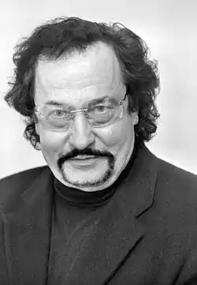
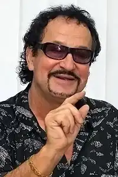
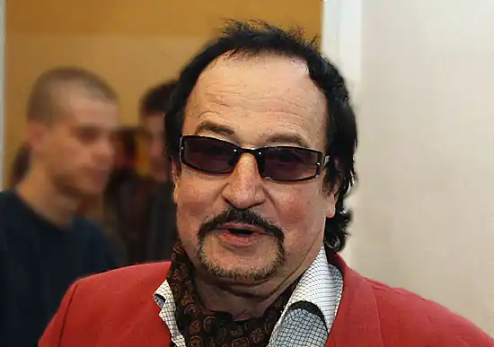
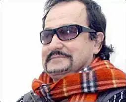
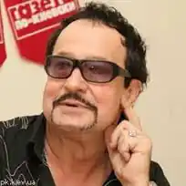
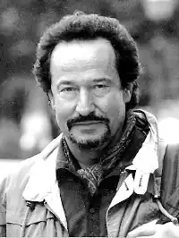

10 вересня 2008 року — трагічна дата в історії української модернової літератури: це день смерті скандального письменника сучасності Юрка Покальчука. Він помер у ніч на 10 вересня після тяжкої й тривалої хвороби в онкологічній лікарні Києва, де провів останні два місяці свого життя.
Юрко народився 24 січня 1941 року в Кременці. Дитинство і юність провів у Луцьку. Навчався в Луцькому педагогічному університеті, хоча згодом перевівся до Ленінградського університету на факультет східних мов (1965 р.).
Як казав сам письменник, з дитинства він "був захоплений тим, що людина може сама створити цілий світ і жити там, особливо, якщо реальність не подобається". Як наслідок, уже в 1956 році Юрко написав своє перше оповідання. Втягнувся, і вже був у такому стані, що не писати просто не міг. З 1997 по 2007 роки Покальчук — президент Асоціації українських письменників, а з 2000 по 2002 роки — член Національної ради з питань телебачення і радіомовлення. Юрка Покальчука знають не лише як одного з найпопулярніших письменників України, а й як науковця, перекладача, кандидата філологічних наук. Юрко як перекладач знав багато іноземних мов: російську, польську, англійську, іспанську, французьку, португальську, італійську, гінді, чеську, німецьку, урду та ін. Він переклав Гемінгвея, Селінджера, Борхеса, Амаду, Маріо Варгаса Льосу, Кіплінга, Рембо та ін. З-під його пера вийшло понад 600 публікацій у періодиці. Юрко також виступав зі своїми віршами під акомпанемент свого рідного музичного гурту "Вогні Великого Міста". Творча спадщина літератора вражає. Ю. Покальчук — автор 17 книжок ("Хто ти?" (1976), "І зараз, і завжди" (1980), "Шабля і стріла" (1990), "Химера" (1992), "Заборонені ігри" (2005) та ін.). Іноді жанр його творів характеризують як "інтелектуальну еротику", причому на перше місце ставлячи саме слово "інтелектуальну". Юрко експериментував у літературі, пишучи свої романи з елементами еротики. Саме тому в його популярності є щось скандальне. Окрім мандрівок в Індонезію, Нікарагуа, Аргентину, які Юрко полюбляв, значна частина його життя була пов’язана з телебаченням. Він працював на телеканалі "1+1", а останнім часом був головою громадської ради при Національній раді. 10 вересня 2008 року Україна втратила не лише відомого літератора, а й сильного журналіста, активного громадського діяча й талановитого музиканта. Як розповідала донька письменника Оксана, "він пішов як святий — уві сні". Святим його вважають і діти з колонії в Прилуках на Чернігівщині, яким Покальчук допомагав 20 років. Він вчив їх читати, малювати, друкував їхні вірші у журналі "Горизонт", а також написав про них свою книгу "Хулігани". "Я бажав би всім когось любити, щоб рухатись вперед", — постійно повторював Юрко Покальчук. Йому було 68, та люблять його люди всіх поколінь. І, незважаючи на те, що письменник пішов від нас, він буде жити вічно у серцях своїх шанувальників.